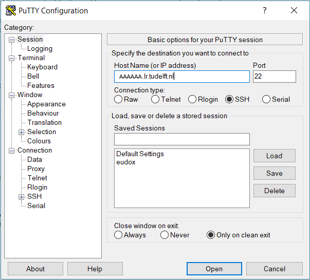
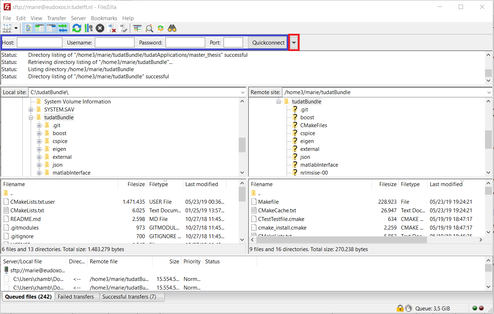

5. Tudat on a remote Linux server¶
This section of the guide refers to the use of Tudat on a remote Linux server. Specific examples will be given with the TU Delft server (only accessible to TU Delft students and staff, please contact the server administrator to ask for server access). The global directions are however applicable to every server you may want to run Tudat on.
5.1. Accessing the server¶
This section details how to access the server. Login to the server is usually done via SSH (secure shell).
For Linux or Mac OS X environments, use the following commands from your terminal (the server adress for TU Delft server is AAAAAAA.tudelft.nl; please contact responsible staff member for server name, in case you are TU Delft staff or M.Sc. thesis student):
ssh -Y <userID>@serverAdress
Note
Adding -Y after the ssh command activates the interface that will allow you to open graphical softwares installed on the server on your local machine.
From a Windows machine, you have to follow a slightly different procedure as you will need an SSH client. One of the most commonly used SSH client is Putty, which you can download from https://www.putty.org. Once downloaded, run the installer (you can keep the default install options) and open it. Fill the tab Session as follows, with the adress of your server (HostName) and the port number you will use to access it, and then select the SSH option. The example below corresponds to the TU Delft server:

Then, you have to go to the Data tab under Connection and fill in your user account (in the figure below, the Auto-login username is to be replaced by your own user ID).

Finally, go to the SSH tab (still under Connection) and then into X1 and tick Enable X11 forwarding. Going back to the Session tab, enter a name for the connection and save. The configuration you have just set up is then saved. When you will later open Putty, simply double-clicking on the connection name you have chosen will directly initiate the connection.
Note
If you want to open graphical software from the server on your local Windows machine, you will also need to install a Xclient (for X11) (VcXsrv or Exceed are possible solutions).
To move files back and forth from the server, you will need a FTP client. The recommended one is FileZilla (you can download it from https://filezilla-project.org, and run the installer keeping the default options). Open FileZilla, and enter the hostname of your server, port number (same as before), user account and associated password and click Quickconnect (in the blanks highlighted in blue in the figure below). For later connections, note that you can directly click on the small arrow next to the Quickconnect button (in red below) and find your connection details already saved in the drop-down menu.

You can then simply drag-and-drop your files from the server (right column) to your local machine (left column) and vice-versa.
5.2. Installing and building Tudat Bundle¶
Most of the steps described below are very similar to the install guide for Linux environments (see Install on Linux) but will be repeated here for the sake of completeness. Before installing Tudat, please make sure that all the required dependencies are installed on the server (see Install on Linux for more details on the Tudat development environment).
Once logged into your server account, navigate to the folder in which you want to download the Tudat code. To print the content of the folder you are in, use the ls command. To navigate from your current folder to the ‘parent’ one, use cd .. (so that if you are in folder1/folder2/ and type cd .., you will end up in folder1/). On the contrary, use cd folderName to do the opposite (enter cd folder2 to get to folder1/folder2/ from folder1/). Once you are in your chosen folder, clone the tudatBundle repository with the following command:
git clone https://github.com/tudat/tudatBundle.git
When the tudatBundle download is completed, a folder tudatBundle has been created in your chosen directory (you can verify it by typing the ls command, as mentioned above). Go to this tudatBundle directory (cd tudatBundle) and enter the following command:
git submodule update --init --recursive
This step aims at updating the required modules and might take some time.
Warning
As a general advice and if you do not need it in particular, please switch off the USE_JSON option on the TU Delft server. Indeed, it will most probably yield compilation issues because the version of the gcc compiler currently available on the server is not supported by the JSON interface. In case you really need the JSON interface, please contact the server administrator to discuss about installing more recent gcc versions.
Since the Linux server is only accessible through a command line, the CMake configuration and build is done using commands rather than buttons in QtCreator. The process consists of three steps:
The configuration stage, in which CMake scans the project and generated the build script;
The build stage, in which CMake calls
maketo compile and link the Tudat libraries and unit tests;The test stage, in which CMake runs all the unit tests and logs the output.
We will now go over these three steps in more detail, outlining the commands and expected output.
- Step 1: Configuring the tudatBundle project
The first step in building the libraries is the creation of the build tree, which contains all necessary build scripts and configuration files. In this step, you can also indicate the options which you want to switch on, e.g. to add features like the low-thrust module or Pagmo integration.
Important
Before running the commands below, make sure you are in the top-level directory in your tudatBundle, e.g.
/home/your_name/tudatBundle/. This directory contains the top-level CMakeLists.txt file that acts as the main project file for CMake.If you want to build the bundle with the options left on their default setting, just entering the following command in your terminal will initiate the configuration:
cmake -DCMAKE_BUILD_TYPE=Debug -G "CodeBlocks - Unix Makefiles"
Note the two arguments that are provided here. The first specifies the build style: you can choose from
DebugandRelease. The second argument specifies the format of the build scripts and should be not be changed.Hint
Which one you should select depends on the available computing resources as well as your preference.
Debugcompiles all libraries with the debug flag, creating large files (resulting in a overall bundle size of multiple tens of GBs) suitable for debugging your applications while being able to step into Tudat code. TheReleaseversion compiles Tudat in a more optimized, compact way; this leads to smaller files and faster execution, although you will lose the advanced debugging features.You might want to modify the default Tudat settings before building the whole Tudat code. Depending on the settings you want, you might set the different options (e.g.
BUILD_WITH_SOCIS_2019,USE_CSPICE,USE_JSON,USE_NRLMSISE00,USE_SOFA,USE_PAGMO,USE_PYGMO,BUILD_WITH_ESTIMATION_TOOLS) to eitherONorOFF. As an example, the optionUSE_PAGMOis set toOFFby default but should be turned on if you are planning on using the PAGMO toolbox for optimisation. This is done by adding the following to the CMake command:-DUSE_PAGMO=ON
So the entire command will look like this:
cmake -DCMAKE_BUILD_TYPE=Debug -DUSE_PAGMO=ON -G "CodeBlocks - Unix Makefiles"
This will configure the Tudat code, and the first time you run the command, download and compile Boost. This step should not take more than a few dozen minutes on Linux. The following output is expected to appear in your terminal:
-- The C compiler identification is GNU 4.8.4 -- The CXX compiler identification is GNU 4.8.4 -- Check for working C compiler: /usr/bin/cc -- Check for working C compiler: /usr/bin/cc -- works -- Detecting C compiler ABI info -- Detecting C compiler ABI info - done -- Detecting C compile features -- Detecting C compile features - done -- Check for working CXX compiler: /usr/bin/c++ -- Check for working CXX compiler: /usr/bin/c++ -- works -- Detecting CXX compiler ABI info -- Detecting CXX compiler ABI info - done -- Detecting CXX compile features -- Detecting CXX compile features - done -- /home/dominicdirkx/Software/tudatClean/tudatBundle/tudat/Tudat/External/CMake/ -- /home/dominicdirkx/Software/tudatClean/tudatBundle -- BOOST: Using gnu. -- Downloading boost 1.60.0 to /home/dominicdirkx/Software/tudatClean/build-tudatBundle-Desktop-Default -- [download 0% complete] -- ....... -- [download 100% complete] -- Extracting boost 1.60.0 to /home/dominicdirkx/Software/tudatClean/build-tudatBundle-Desktop-Default/boost_unzip -- Building b2 (bjam) -- ./bootstrap.sh;--with-toolset=gcc -- Build boost (note that this may take a while, please sit back) -- ./b2;link=static;threading=multi;runtime-link=shared;--build-dir=Build;stage;-d+2;--hash;--ignore-site-config;variant=release;cxxflags=-fPIC;cxxflags=-std=c++11;--layout=tagged;toolset=gcc;-sNO_BZIP2=1;--with-filesystem;--with-system;--with-thread;--with-regex;--with-date_time;--with-test -- Building CSpice from within TudatBundle. -- WARNING: building release version! -- JsonCpp Version: 1.6.5 -- Building NRLMSISE00 from within TudatBundle. -- WARNING: building release version! -- Building Tudat from within TudatBundle. -- Tudat Relative path (wrt to project): /tudat/Tudat -- WARNING: building release version! -- Using gnucxx compiler. -- Performing Test CXX_SUPPORTS_CXX11 -- Performing Test CXX_SUPPORTS_CXX11 - Success -- Found Eigen3: /usr/include/eigen3 (Required is at least version "2.91.0") -- Boost version: 1.60.0 -- Found the following Boost libraries: -- date_time -- system -- unit_test_framework -- filesystem -- regex -- SPICE disabled! -- NRLMSISE-00 disabled! -- Building SatellitePropagatorExamples from within TudatBundle. -- Relative path (wrt to project): /tudatExampleApplications/satellitePropagatorExamples/SatellitePropagatorExamples -- WARNING: building release version! -- Using gnucxx compiler. -- Boost version: 1.60.0 -- Found the following Boost libraries: -- thread -- date_time -- system -- unit_test_framework -- filesystem -- regex -- Found Tudat: /home/dominicdirkx/Software/tudatClean/tudatBundle/tudat/Tudat/.. (Required is at least version "2.0") -- Building SpiceAndJSON from within TudatBundle. -- Relative path (wrt to project): /tudatExampleApplications/libraryExamples/SpiceAndJSON -- WARNING: building release version! -- Using gnucxx compiler. -- Boost version: 1.60.0 -- Found the following Boost libraries: -- thread -- date_time -- system -- unit_test_framework -- filesystem -- regex -- Relative path to Tudat found: /tudat/Tudat -- SPICE_LIBRARIES: cspice -- Found SPICE: /home/dominicdirkx/Software/tudatClean/tudatBundle/cspice/include/../.. -- JSONCPP_LIBRARIES: jsoncpp -- Found JSONCPP: /home/dominicdirkx/Software/tudatClean/tudatBundle/jsoncpp/include/json/../../include -- Building TemplateApplication from within TudatBundle. -- Relative path (wrt to project): /tudatExampleApplications/templateApplication/TemplateApplication -- WARNING: building release version! -- Using gnucxx compiler. -- Boost version: 1.60.0 -- Found the following Boost libraries: -- thread -- date_time -- system -- unit_test_framework -- filesystem -- regex -- Configuring done -- Generating done -- Build files have been written to: /home/dominicdirkx/Software/tudatClean/build-tudatBundle-Desktop-Default
Depending on the options you passed to CMake, the output can change accordingly (e.g. you will see Pagmo related messages when you use
-DUSE_PAGMO=ON).Important
If you get error messages, check your command line for errors. If you still encounter configuration errors, please create an issue on GitHub, adding a description of the problem, the CMake output, and the command line you used to configure the bundle.
- Step 2: Building the libraries
The next step is to actually build the libraries from source. To this extent, CMake will run the
makecommand on the build tree, which in turn calls the compiler and linker for all libraries that should be built.The build is initiated by running the following command in the top-level tudatBundle directory:
cmake --build . --target all -- -j6
The path following the
--buildcommand specifies the build directory; in this case, a full stop is used to denote that we will use the current directory.--targetspecifies which binaries are built. It is strongly recommended to leave this onall, as this will build all libraries and unit tests.After the target specification, there is one more argument. The
--indicates that the arguments that follow are passed directly tomake. The only make argument that is relevant here is the-jxxoption, which specifies how many (logical) processor cores should be used to compile Tudat, where xx is an integer number equal to or greater than 1. For more information on this topic, please refer to Step 5 on the Compile and Test Tudat Libraries page.This step can take up to several hours, depending on the server resources that have been made available to you, so please wait patiently for the build to finish. Again, in case of build errors, please create a GitHub issue.
- Step 3: Running the Tudat unit tests
The only remaining step is to run all the unit tests to ensure Tudat is working properly. It can be done from the tudatBundle directory by typing the following command:
cmake --build . --target all -- test
You should then be able to see the unit tests being run in your terminal, the output looking as follows:
15:15:48: Running steps for project TudatBundle... 15:15:48: Starting: "/usr/bin/make" test Running tests... Test project /home/dominicdirkx/Software/tudat/build-tudatBundle-Desktop-Default Start 1: sofa-test 1/249 Test #1: sofa-test ............................................................ Passed 0.01 sec Start 2: test_AerodynamicMomentAndAerodynamicForce 2/249 Test #2: test_AerodynamicMomentAndAerodynamicForce ............................ Passed 3.06 sec Start 3: test_AerodynamicsNamespace 3/249 Test #3: test_AerodynamicsNamespace ........................................... Passed 0.00 sec Start 4: test_AerodynamicCoefficientGenerator 4/249 Test #4: test_AerodynamicCoefficientGenerator ................................. Passed 0.03 sec Start 5: test_ExponentialAtmosphere 5/249 Test #5: test_ExponentialAtmosphere ........................................... Passed 0.00 sec Start 6: test_CustomConstantTemperatureAtmosphere 6/249 Test #6: test_CustomConstantTemperatureAtmosphere ............................. Passed 0.00 sec Start 7: test_TabulatedAtmosphere 7/249 Test #7: test_TabulatedAtmosphere ............................................. Passed 26.81 sec Start 8: test_TabulatedAerodynamicCoefficients 8/249 Test #8: test_TabulatedAerodynamicCoefficients ................................ Passed 1.37 sec ... ... ... 243/249 Test #243: test_JsonInterfaceTermination ........................................ Passed 0.02 sec Start 244: test_JsonInterfaceThrust 244/249 Test #244: test_JsonInterfaceThrust ............................................. Passed 0.01 sec Start 245: test_JsonInterfaceTorque 245/249 Test #245: test_JsonInterfaceTorque ............................................. Passed 0.00 sec Start 246: test_JsonInterfaceVariable 246/249 Test #246: test_JsonInterfaceVariable ........................................... Passed 0.01 sec Start 247: test_JsonInterfaceObservation 247/249 Test #247: test_JsonInterfaceObservation ........................................ Passed 0.09 sec Start 248: test_JsonInterfaceParameter 248/249 Test #248: test_JsonInterfaceParameter .......................................... Passed 0.05 sec Start 249: test_JsonInterfaceSimulationSingleSatelliteVariational 249/249 Test #249: test_JsonInterfaceSimulationSingleSatelliteVariational ............... Passed 0.09 sec 100% tests passed, 0 tests failed out of 249 Total Test time (real) = 623.61 sec 15:16:48: The process "/usr/bin/make" exited normally.
Depending on your compilation settings, this step can take from several minutes to more than one hour (the number of unit tests also depends on your settings). If the output ends with
100% tests passed, 0 tests failed, everything worked out and you do not need to take any further action. If any tests fail the reader is refered to Failed unit tests.
5.3. Running Tudat applications on the server¶
You are now ready to play around with the sample applications already available in Tudat or to run your own applications on the server. The different applications can be accessed and run from the following folders, depending on the type of application.
If you want to re-run an unit test independently, go to
tudatBundle/tudat/bin/unit_tests/.If you want to run an example application, go to
tudatBundle/tudatExampleApplications/satellitePropagatorExamples/bin/applications/.If you want to run an PAGMO optimisation application, go to
tudatBundle/tudatExampleApplications/libraryExamples/bin/applications/.
Once you are in the proper directory, use the ls command to get the list of all the built executables. Enter ./ directly followed by the name of your targeted executable to run it (./executable_name). The executable outputs will then appear in your terminal.
It is of course also possible to write your own applications and run them on the server. The guidelines to write your application are presented in Creating Tudat Applications - Git. As mentioned there, new applications are typically added to the tudatBundle/tudatApplications/ folder. If so, then the executables created after building your new applications can be found in tudatBundle/tudatApplications/bin/applications/ and run with the same ./ command which has been described above.
For more details about getting a new application from an existing github repository or creating a totally new one, the reader is referred to Creating Tudat Applications - Git.
When you modify either an application file or some parts of the Tudat code, you need to redo the building process (with the command make, from the folder containing the files you have modified). This will automatically generate new executables corresponding to the updated version of the code.
As previously mentioned, the application outputs appear in the terminal when running the associated executable. However, it might be advantageous to run the application in the background to be allowed to log out from the server while keeping your application running. Several options are possible here:
If you have already run your application as described above (so with a simple
./executable_namecommand) but want to put it in the background to be able to log out, then pressctrl+Zto pause it and enter the commandbgto put it in the background. Then you can typeexitto log out and your application will keep running.You can also directly start the process in the background by using the command
./executable_name &. However, if you do so, the application outputs will not be accessible. You can choose to store them in a log file so that you can still read them when the running is over. This can be done with the following command (log_run_datebeing the name of the log file):./executable_name > log_run_date 2>&1 &